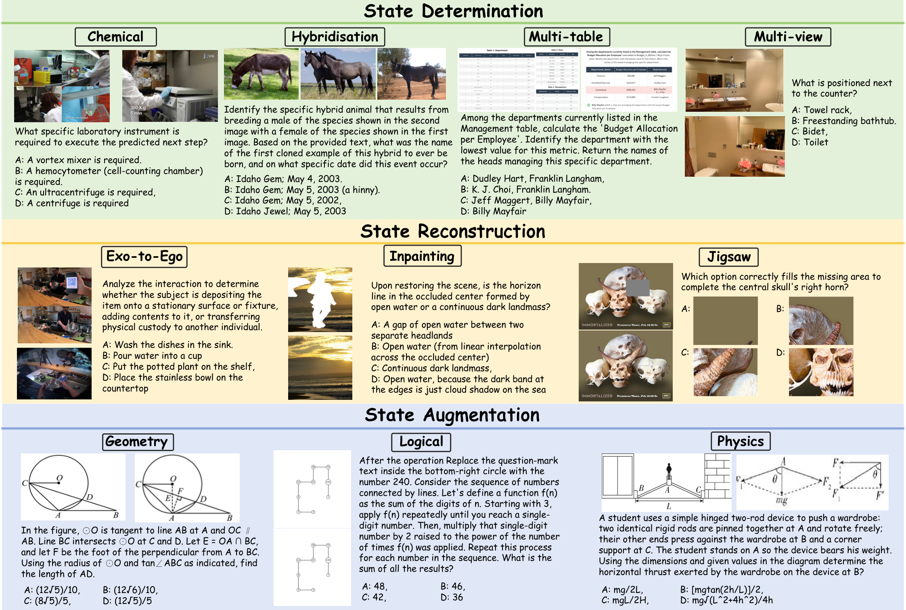
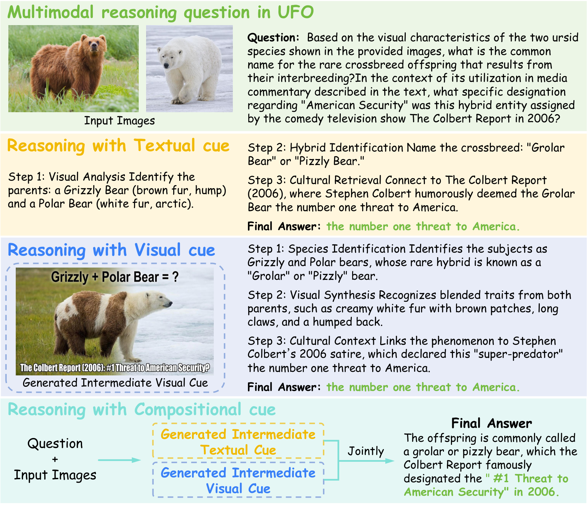

UFO spans three state-transition regimes — State Determination, State Reconstruction, and State Augmentation — across 10 tasks.
Unified Foundation Models (UFMs), which support interleaved multimodal generation and understanding, have been proposed as a promising paradigm for reasoning about dynamic world states, yet it remains unclear whether the visual content they generate functions as grounded evidence for subsequent reasoning or merely as auxiliary output. Existing benchmarks largely evaluate generation and understanding as separate capabilities and do not test their functional dependence during reasoning.
We introduce UFO, a benchmark designed to evaluate whether UFMs generate and use image and text cues as evidence for compositional multimodal reasoning. UFO spans three cue types — state determination, state reconstruction, and state augmentation — which correspond to progressively smaller transformations of the underlying world state. Our analysis reveals a significant modality gap: models often achieve high prediction accuracy even when the generated visual cues exert limited influence on their decisions, indicating weakened evidential coupling and a reliance on textual shortcuts rather than robust cross-modal grounding.
Given input images and a question, a model first generates intermediate textual and visual cues describing a future state, then answers the question conditioned on those cues. UFO evaluates four reasoning schedules to isolate each modality's contribution.

Answer from the input images only — no intermediate cue.
Answer conditioned on a generated text cue.
Answer conditioned on a generated visual cue (image).
Answer conditioned on both cues. Synergy ⇔ joint > unimodal.
Future state fully specified by inputs.
Recover missing / occluded components.
Make implicit relations explicit.
3,366
curated questions
10
tasks · 3 regimes
4
reasoning protocols
12+
unified models evaluated
Key finding. Although the information gain required decreases from determination → reconstruction → augmentation, this increased ease of evidential coupling does not consistently improve UFM performance. Most models remain far from being truly "unified": generated visual cues are often state-aligned yet only weakly conditioned on when producing the final answer.
pip install -e . # installs the `ufo-eval` command
cp .env.example .env # add your OPENROUTER_API_KEY
ufo-eval run --models GPT-5.1 --split mcq --limit 30 --out outputs/demoOne command runs inference → scoring → tables. Full toolkit, 10 local UFM adapters, and docs on GitHub; data on Hugging Face.
@inproceedings{ufo2026,
title = {Do Vision and Text Cues Exhibit Evidential Coupling?
UFO: A Benchmark for Compositional Multimodal Reasoning in Unified Models},
author = {Yang, Zhongyu and Xu, Dannong and Zhang, Yonghan and Chen, Kefan and
Wang, Xinyi and Xu, Yang and Pang, Wei and Yuan, Yingfang},
booktitle = {International Conference on Machine Learning (ICML)},
year = {2026}
}